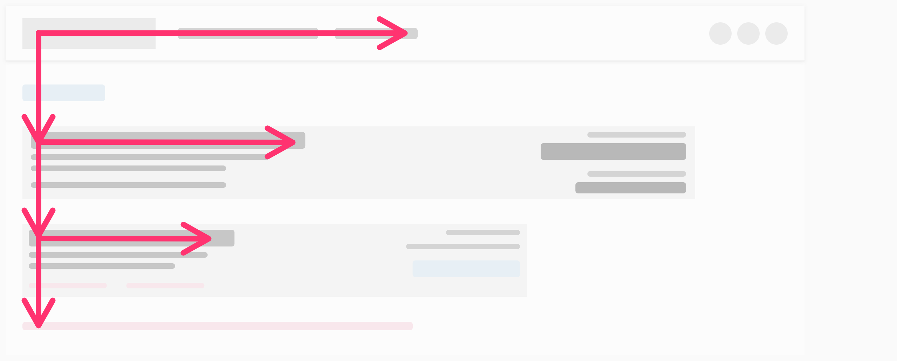
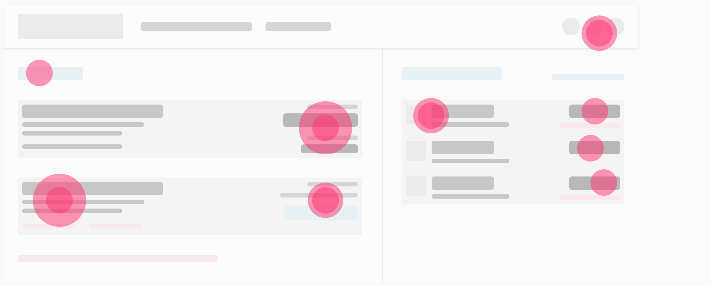
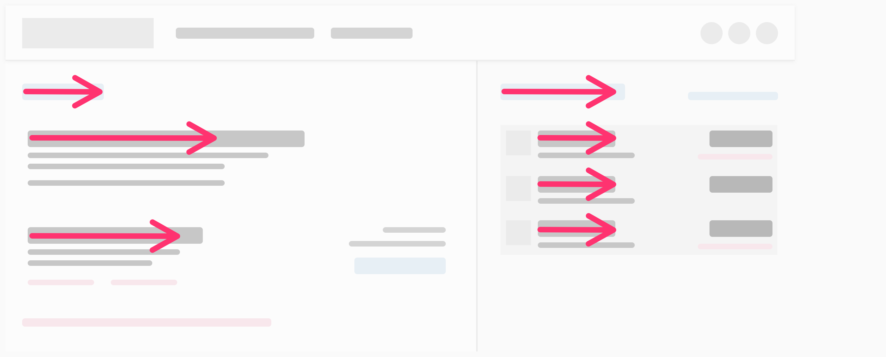
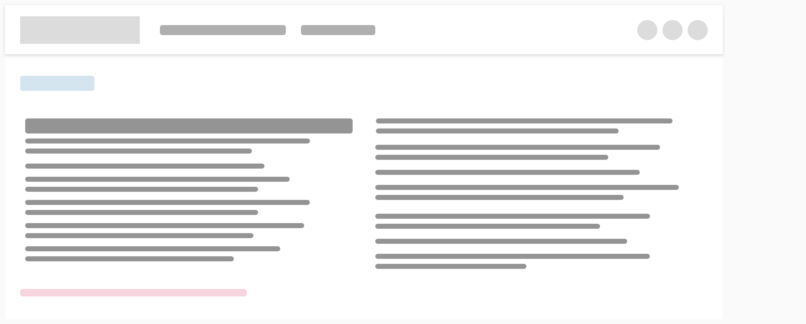
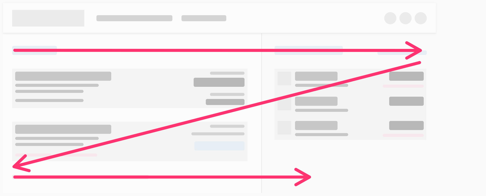
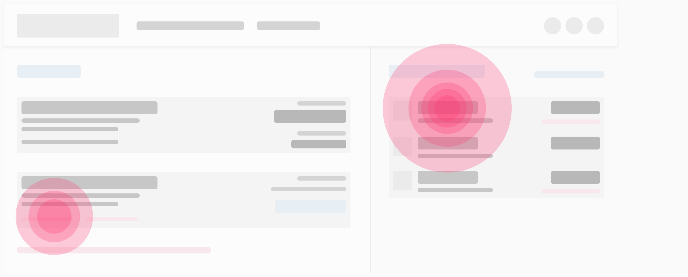

People don't read every word on a page, we scan. In an attempt to be efficient to achieve our goals. We have learned that scanning can deliver almost the same amount of information as reading, but with less time and effort.
People scan based on their task, their previous experience with the site, the HealthEquity brand or other sites, and also the type of content.
After consuming headings and subheadings users tend to read the beginning lines near the top of the page, working their way down reading less as they go. This form of scanning tends to appear like a capital letter F — from which the name is derived for this pattern.
This pattern involves focusing on specific words or chunks of information spread throughout the page. These words or chunks stand out because of their associated hierarchy (e.g. links, colored words, bolded words, and bulleted lists). The user might also be tracking the specific information they need to accomplish their task (e.g. Names, Addresses, digits or other numerical information).
Users layer-cake the page by focusing almost exclusively on page headings and subheadings, rarely stopping to consume any text in between. Users follow this pattern until they find the heading that resresents the infomration they are looking for.
This is more traditional reading rather than just scanning the page. Users focus in on all or nearly all the words and content of the page. This lends itself to the best comprehension but requires the most effort.
Usually associated with layouts that have images alternating with text. This layout is genreally used to break the monotony of a long page but it isn't as efficient for the user to scan following this pattern.
Occurs when a user returns to a certain part of the page again, in extreme cases they return multiple times. This usually happens because the user is confused, or that the information presented in the section under review doesn't meet the expectations for what they believe should be there.
